| 용어 | 수단 | 목적 |
|---|---|---|
| 신호 | 형상·색·음 | 열차 운행 조건을 기관사에게 지시. 현시 기구=신호기 |
| 전호(Sign) | 몸짓·기구·음향 | 관계자 상호간 의지 전달 (출발·비상·입환전호) |
| 표지 | 표시물 | 위치·방향·조건을 표시 (고정 정보) |
궁극적 목적: 열차의 안전운행 확보 ★
최우선 사항: 절대안전 ★
| 종류 | 현시 방법 | 특징 |
|---|---|---|
| 완목식 신호기 | 주간=완목 위치·형태 / 야간=등색 | 주야간 현시방법 다름 ★ |
| 색등식 신호기 | 색등으로 현시 | 주야간 동일. 단등형(미사용)/다등형 |
| 등열식 신호기 | 2개 이상 백색등 배열 | 유도·중계신호기에 사용 |
| 종류 | 작동 방식 | 사용 구간 |
|---|---|---|
| 수동신호기 | 신호취급자가 레버 조작 | 비자동구간 |
| 자동신호기 | 궤도회로로 자동 현시 / 취급자 조작 불가 | 자동폐색구간 폐색신호기 |
| 반자동신호기 | 자동현시 + 취급자 조작 가능 | 자동폐색구간 장내·출발신호기 |
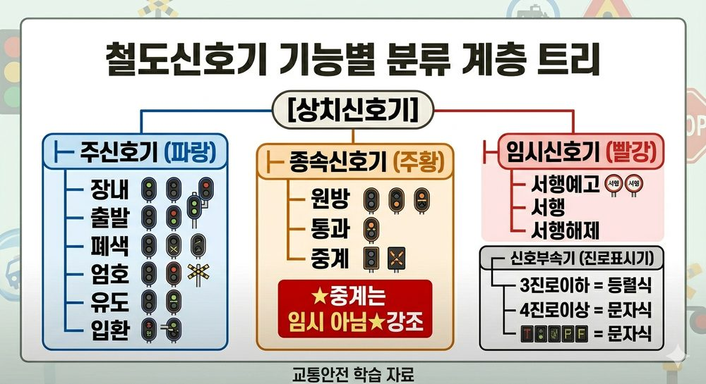
신호기 기능별 분류 계층 트리
| 종류 | 기능 | 설치 위치 |
|---|---|---|
| 장내신호기 | 정거장 구내 진입 가부 지시 | 대향 100m / 배향 60m |
| 출발신호기 | 정거장 출발 가부 지시 | 출발선 시점 |
| 폐색신호기 | 폐색구간 진입 가부 지시 | 폐색구간 시작점 |
| 엄호신호기 | 평면교차분기·특수시설 통과 열차 진입 가부 | 특수지점 앞 |
| 유도신호기 | 장내신호기 정지 시에도 예외 진입 허용 | 장내신호기에 부속 |
| 입환신호기 | 입환차량 진입 가부 | 입환 구역 |
| 종류 | 기능 | 특징 |
|---|---|---|
| 원방신호기 | 장내신호기 현시 예고 | 비자동구간 / 정위=주의 |
| 통과신호기 | 기계식 장내신호기 하단에서 통과 여부 지시 | 기계식에만 사용 |
| 중계신호기 | 주신호기 현시상태 예고·중계 | 등열식 사용 |
서행예고신호기 / 서행신호기 / 서행해제신호기
진로표시기: 장내·출발·입환신호기에 부속
| 진로 수 | 진로표시기 종류 |
|---|---|
| 3진로 이하 | 등렬식 |
| 4진로 이상 | 문자식 |
| 구분 | 해당 신호기 | 정지 현시 시 |
|---|---|---|
| 절대신호기 | 장내·출발·엄호·유도·입환 | 절대 정지 |
| 허용신호기 | 자동폐색구간 폐색신호기 | 일단정지 후 서행 가능 |
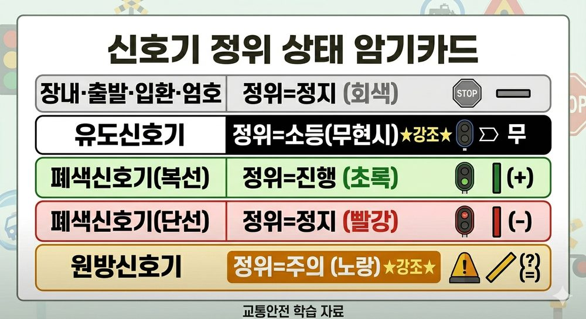
신호기 정위 상태 암기카드
| 신호기 | 정위 상태 | 비고 |
|---|---|---|
| 장내·출발·입환·엄호 | 정지 | |
| 유도신호기 | 소등(무현시) | 정지 아님! ★ |
| 폐색신호기 (복선) | 진행 | |
| 폐색신호기 (단선) | 정지 | |
| 원방신호기 | 주의 | 진행 아님! ★ |
| 신호기 종류 | 확인거리 | 비고 |
|---|---|---|
| 장내·출발·폐색·엄호 | 600m 이상 | ★ |
| 입환·중계신호기·주신호용 진로표시기 | 200m 이상 | |
| 유도신호기·입환신호용 진로표시기 | 100m 이상 | |
| 장내신호기 대향 방향 | 100m 이상 | |
| 장내신호기 배향 방향 | 60m 이상 |
| 종류 | 방법 |
|---|---|
| 발뢰신호 | 레일에 설치 → 차륜이 밟으면 뇌관 폭발 |
| 발염신호 | 신호염관의 적색화염 |
| 발광신호 | 특수신호 발광기에 의한 적색등 움직임 |
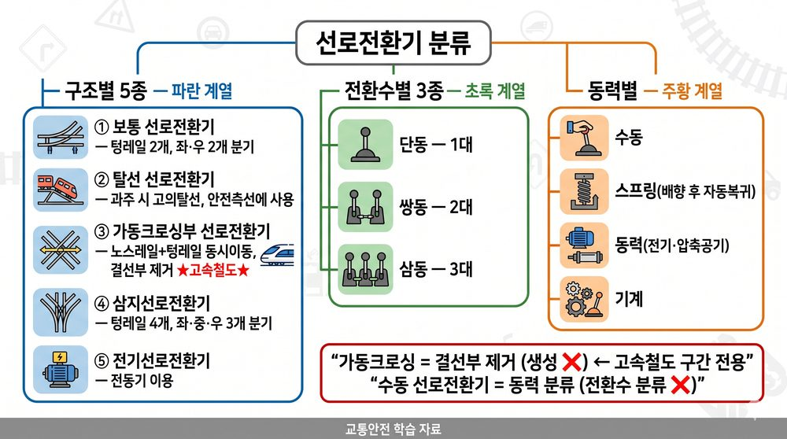
선로전환기 분류체계 트리
| 종류 | 특징 |
|---|---|
| 보통 선로전환기 | 텅레일 2개, 좌·우 2개 분기 |
| 탈선 선로전환기 | 과주 시 의도적 탈선. 안전측선에 사용 |
| 가동크로싱부 선로전환기 | 노스레일+텅레일 동시 이동 / 결선부 제거 / 고속철도 ★ |
| 삼지선로전환기 | 텅레일 4개, 좌·중·우 3개 분기 |
| 전기선로전환기 | 전동기 이용 전환 |
| 전환수 분류 | 1버튼으로 전환하는 수 |
|---|---|
| 단동 | 1대 |
| 쌍동 | 2대 |
| 삼동 | 3대 |
정위 결정법 (우선순위 순)
| 우선순위 | 결정 방향 |
|---|---|
| 본선·본선 또는 측선·측선 | 주요 방향 |
| 단선 상하본선 | 열차가 진입하는 방향 |
| 본선·측선 | 본선 방향 |
| 본선(측선)·안전측선 | 안전측선 방향 |
| 탈선선로전환기 | 탈선시키는 방향 |
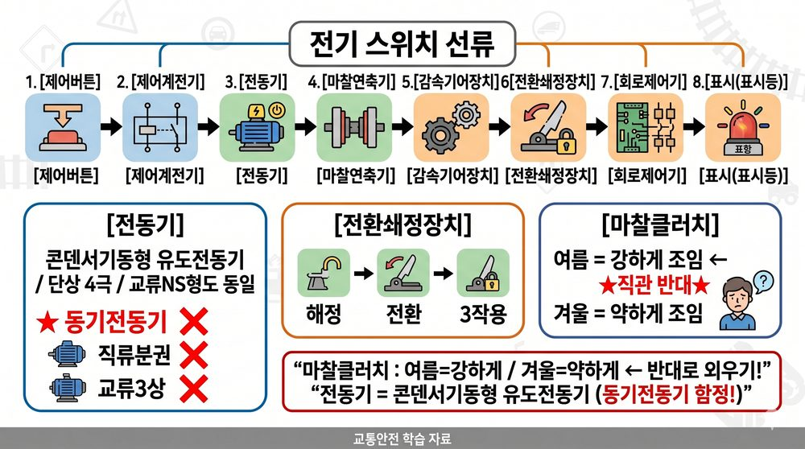
전기선로전환기 계통도 8단계
| 부품 | 내용 |
|---|---|
| 전동기 | 콘덴서 기동형 유도전동기, 단상 4극 ★ |
| 전환쇄정장치 | 해정·전환·쇄정 3작용 수행 |
| 마찰클러치 | 여름=강하게, 겨울=약하게 ★ (직관 반대!) |
| 종류 | 전환시간 | 함정 |
|---|---|---|
| NS형 | 6초 이하 | 7초 교체 |
| NS-AM형 | 7초 이하 | 6초 교체 |
| MJ81형 | 5초 이하 ★ | 6·7초 교체 |
| 차상선로전환기 | 2초 이하 |
| 구분 | 위험 |
|---|---|
| 대향 (뾰족한 쪽으로 진입) | 탈선 우려 |
| 배향 (넓은 쪽에서 진입) | 할출 우려 |
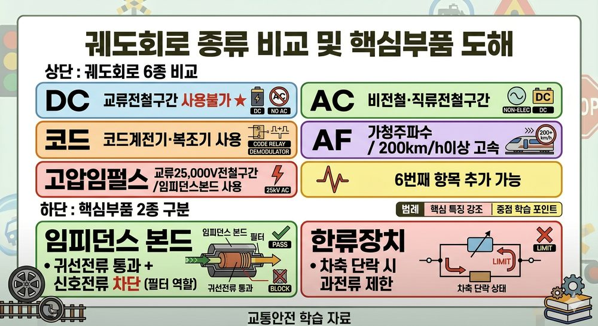
궤도회로 6종 비교 및 핵심부품 도해
| 종류 | 특징 |
|---|---|
| 직류(DC) 궤도회로 | 직류 전원 / 교류전철구간 사용 불가 ★ |
| 교류(AC) 궤도회로 | 비전철구간·직류전철구간에서 사용 |
| 정류 궤도회로 | 교류를 정류한 맥류 사용 |
| 코드(Code) 궤도회로 | 코드(부호)로 전류 단속. 코드계전기·복조기 사용 |
| AF 궤도회로 | 가청주파수(AF) 사용. 고속 200km/h 이상. 차내 제동거리 전달 |
| 고압임펄스 궤도회로 | 교류 25,000V 전철구간. 임피던스본드 사용. 외란에 강함 ★ |
| 부품 | 기능 |
|---|---|
| 임피던스 본드 | 귀선전류(전차전류) 통과 / 신호전류 차단 ★ |
| 한류장치 | 차축 단락 시 과전류 제한. 직류=가변저항, 교류=저항 또는 리액터 ★ |
| 보상콘덴서 | 궤도회로 주파수 레벨 감쇄 보상 |
| 가상선(LF) | 운행방향 관계없이 일정 임피던스 유지 |
사구간: 차축이 점유해도 궤도계전기가 작동하지 않는 구간
| 항목 | 내용 |
|---|---|
| 허용 최대 길이 | 7m 이하 ★ |
| 발생 장소 | 터널 / 선로 분기교차지점 / 크로싱 부분 |
| 비해당 | 교량 ❌ — 사구간 발생 장소 아님 |
| 부품 | 기능 |
|---|---|
| 보상용 콘덴서 | 인덕턴스 상쇄 → 직렬공진 → 신호감쇠 감소 → 궤도회로 길이 연장 |
| 동조유닛(TU) | 특정 주파수 통과/차단 → 인접 궤도회로 간섭 방지 |
| 매칭유닛 | 임피던스 정합 → 전송손실 최소화 |
| 종류 | 동작 특성 | 용도 |
|---|---|---|
| 자기유지 계전기 | 여자전류 차단 후에도 상태 유지 | 전기선로전환기 제어계전기 (DC24M) |
| 완동 계전기 | 전압 인가 후 일정 시간 후 동작 (지연 동작) | |
| 완방 계전기 | 전류 차단 후 일정 시간 후 낙하 (지연 복귀) | |
| 무극선조 계전기 | 자속 극성 관계없이 동작 | 궤도반응·전철쇄정 |
| 유극 3위식 계전기 | N/R/Open 3가지 상태 | 전기연동장치 전철표시계전기(KR) |
| 선조계전기 | N접점·R접점 보유, DC 24V | 일반적 직류계전기 |
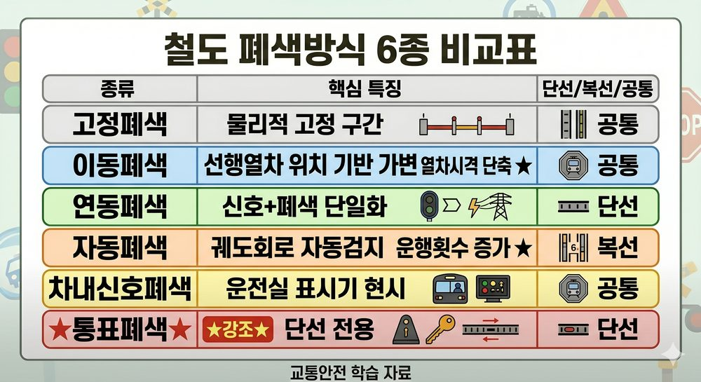
폐색방식 6종 비교표
| 방식 | 특징 | 비고 |
|---|---|---|
| 고정폐색 | 물리적으로 고정된 폐색구간 | |
| 이동폐색 | 선행열차 위치 기반 가변 구간 / 열차시격 단축·수송력 증강 ★ | |
| 연동폐색 | 역간 1폐색 / 신호기+폐색 단일화 / 상대방 역 전원 사용 ★ | 복선·단선 |
| 자동폐색 | 궤도회로로 열차 자동검지 → 폐색신호기 자동제어 / 운행횟수 증가 ★ | 단선·복선 |
| 차내신호폐색 | 운전실 표시기에 현시. ATC 연계 | |
| 통표폐색 | 통표(증표) 기계 사용 | 단선 전용 ★ |
| 방식 | 조건 |
|---|---|
| 통신식 | 관제사·기관사 무전 가능 시 |
| 지도통신식 | 관제사·기관사 무전 불가 시 |
| 지도식 | 특별한 경우 |
신호기·선로전환기·궤도회로를 상호 연동하여 Fail-safe 실현
| 종류 | 특징 |
|---|---|
| 기계연동장치 | 레버 조작. 기기 간 연쇄 기계적 이루어짐. 궤도회로와는 연쇄 ❌ |
| 전기연동장치 | 레버·버튼 집중. 계전기군에 의한 전기적 연쇄 |
| 전자연동장치 | 계전기 로직을 전자 논리회로+컴퓨터+소프트웨어로 구성 |
| 방식 | 특징 |
|---|---|
| 진로정자식 | 각 진로마다 1개 레버 |
| 단독정자식 | 선로전환기 개별 전환 후 신호레버로 진로 구성 |
| 진로선별식 | 출발점+도착점 버튼 2개 취급 → 자동 진로 선택 / 회로 간소화·접점 절약 ★ |
| 종류 | 내용 |
|---|---|
| 정위쇄정 | 갑→반위 시 을은 정위 쇄정 |
| 반위쇄정 | 을→반위 후 갑→반위 시 을은 반위 쇄정 |
| 정반위쇄정 | 갑→반위 시 을은 정위·반위 어디든 쇄정 |
| 조건부쇄정 | 다른 취급버튼 조건 충족 시에만 쇄정 |
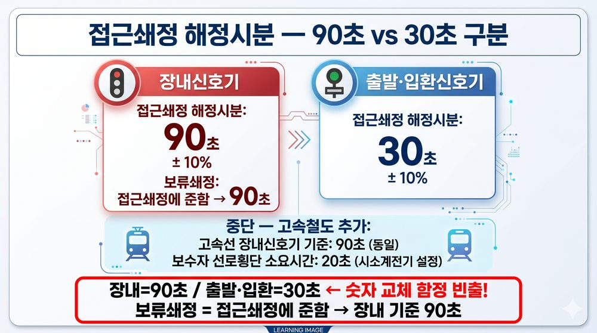
접근쇄정 해정시분 비교카드
| 신호기 | 해정시분 | 함정 |
|---|---|---|
| 장내신호기 | 90초 ± 10% | 30초 교체 |
| 출발·입환신호기 | 30초 ± 10% | 90초 교체 |
| 보류쇄정 | 접근쇄정에 준함 → 장내 기준 90초 |
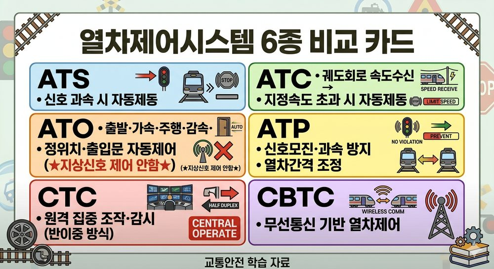
ATS/ATC/ATO/ATP/CTC/CBTC 비교
| 시스템 | 풀네임 | 핵심 기능 |
|---|---|---|
| ATS | Automatic Train Stop | 신호 과속 시 자동 제동 적용 |
| ATC | Automatic Train Control | 궤도회로 속도정보 수신 → 최대 지정속도 초과 시 자동 제동 |
| ATO | Automatic Train Operation | 출발·가속·주행·감속·정위치정차·출입문 자동 제어 |
| ATP | Automatic Train Protection | 신호모진·과속 방지. 열차간격조정·비상정지 제어 |
| ATS(S) | Automatic Train Supervision | 열차 운행상황 통제·감시. ATR 기능 포함 |
| CTC | Centralized Traffic Control | 일괄 원격 조작. 열차 위치 집중 감시·제어 |
| CBTC | Communication Based Train Control | 무선통신 기반. 궤도회로 불필요. 유지비 감소 |
CTC 효과 ✅: 열차운행계획 수립 / 신호설비 감시 / 진로 자동제어 / 운행상황 표시
CTC 기반 폐색장치: 자동폐색장치
CTC 데이터 전송 방식: 반이중 방식 (동시 양방향 불가)
| 항목 | 내용 |
|---|---|
| ATS 지상자 이격 거리 | 400mm 이상 |
| 속도조사식 설치위치 | 우측 300mm ± 10mm |
ATP 지상장치 구성요소 ✅: 고정정보전송장치 / 선로변제어유니트 / 가변정보전송장치
TTC(열차종합제어) 구성요소: 표시반 / 제어용콘솔 / 데이터전송장치
발리스(Balise): ATP에서 현장정보를 열차로 전송하는 장치
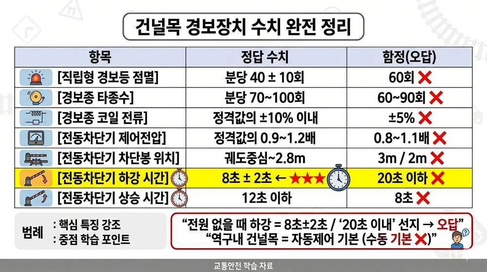
건널목 경보장치 핵심 수치 암기카드
| 항목 | 수치 | 함정(오답) |
|---|---|---|
| 직립형 경보등 점멸 | 분당 40 ± 10회 | 60회 ❌ |
| 경보종 타종수 | 분당 70~100회 | 60~90회 ❌ |
| 경보종 코일 전류 허용 범위 | 정격값의 ± 10% 이내 | ±5% ❌ |
| 전동차단기 제어전압 | 정격값의 0.9~1.2배 | 0.8~1.1배 ❌ |
| 전동차단기 차단봉 위치 | 궤도중심~차단봉 2.8m | 3m/2m ❌ |
| 전동차단기 하강 시간 | 8초 ± 2초 ★★ | 20초 이하 ❌ |
| 전동차단기 상승 시간 | 12초 이하 | 8초 ❌ |
자동신호구간 = 궤도회로식 (자동 경보제어)
역구내 건널목 = 자동제어 기본 (불가피 시에만 수동)
전동차단기 구성요소: 마찰연축기 / 직류직권전동기 / 감속치차
| 장치 | 검지 대상·특징 |
|---|---|
| 끌림검지장치 | 차량 하부 끌림 물체. 기지~고속선 진입부, 약 60km 간격 |
| 강우검지장치 | 집중호우·연속강우 → 노반 붕괴 방지 |
| 적설검지장치 | 선로변 적설량 |
| 기상검지장치 | 풍향·풍속·강우량·적설량 통합 |
| 지장물검지장치 | 낙석·토사·차량 침범 |
| 건널목 지장물 검지장치 | 건널목 지장물 → 경고등 발광 |
| 차축온도검지장치(HBD) | 차축 온도 |
| 레일온도검지장치(RTCP) | 혹서기 레일 장출 방지 |
| 터널경보장치(TACB) | 터널 내 보수자 보호 |
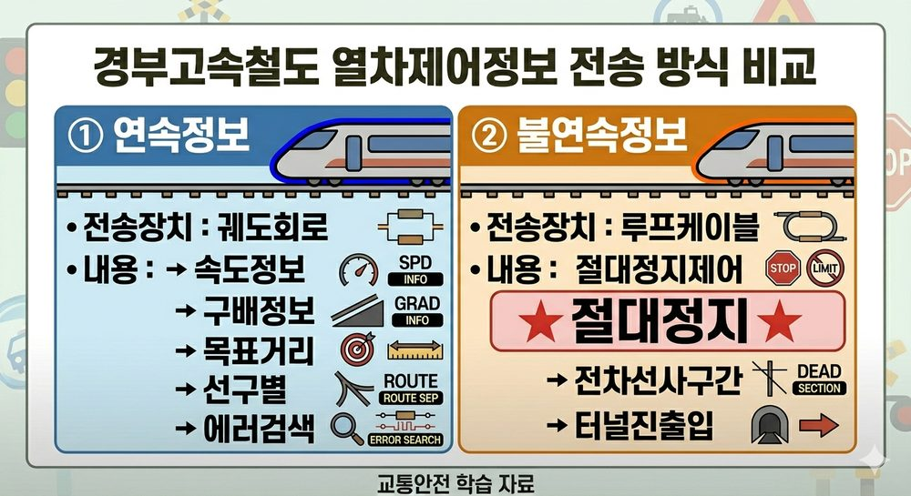
고속철도 연속정보 vs 불연속정보 비교
| 구분 | 전송 장치 | 전송 내용 |
|---|---|---|
| 연속정보 | 궤도회로 | 속도정보·구배정보·목표거리·선구별·에러검색 |
| 불연속정보 | 루프케이블 | 절대정지제어·전차선사구간·터널진출입 |
| 항목 | 내용 |
|---|---|
| 고속철도 분기기 | F18 이상: 노스 가동형 선로전환기 (TGV·경부고속선 사용) ★ |
| 고장감시 정상 색상 | 녹색 (고장=적색) |
| 고장감시 고장 색상 | 적색 |
| LCP 설치 위치 | 현장역 (CTC 사령실 아님) ★ |
| 보수자 선로횡단 소요시간 | 20초 (시소계전기 설정) |
| 고속선 장내 접근쇄정 해정시분 | 90초 |
| 항목 | 수치 | 함정 |
|---|---|---|
| 장내·출발·폐색·엄호 확인거리 | 600m 이상 | |
| 입환·중계신호기 확인거리 | 200m 이상 | |
| 유도신호기 확인거리 | 100m 이상 | |
| 장내 대향 거리 | 100m 이상 | |
| 장내 배향 거리 | 60m 이상 | |
| 사구간 허용 길이 | 7m 이하 | 5m·10m 교체 |
| 항목 | 수치 | 함정 |
|---|---|---|
| NS형 전환시간 | 6초 이하 | |
| NS-AM형 전환시간 | 7초 이하 | |
| MJ81형 전환시간 | 5초 이하 ★ | 6·7초 교체 |
| 차상선로전환기 전환시간 | 2초 이하 | |
| 장내신호기 접근쇄정 해정 | 90초 ± 10% | 30초 교체 |
| 출발·입환신호기 접근쇄정 해정 | 30초 ± 10% | 90초 교체 |
| 보수자 선로횡단 소요시간 | 20초 | |
| 끌림검지장치 설치 간격 | 60km 간격 |
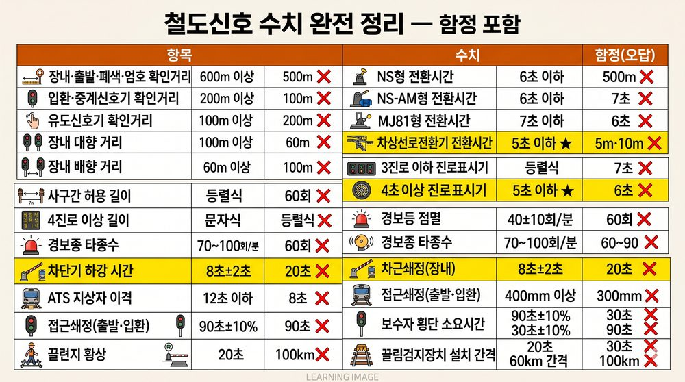
철도신호 핵심 수치 통합 암기표
| 항목 | 수치 | 함정 |
|---|---|---|
| 경보등 점멸 | 40 ± 10회/분 | 60회 교체 |
| 경보종 타종수 | 70~100회/분 | 60~90회 교체 |
| 경보종 코일 전류 | 정격 ± 10% | |
| 차단기 제어전압 | 정격 0.9~1.2배 | |
| 차단봉 위치 | 궤도중심~ 2.8m | 3m/2m |
| 차단기 하강 시간 | 8초 ± 2초 ★ | 20초 교체 |
| 차단기 상승 시간 | 12초 이하 | |
| ATS 지상자 이격 | 400mm 이상 | 300mm |
| 속도조사식 설치위치 | 우측 300mm ± 10mm |